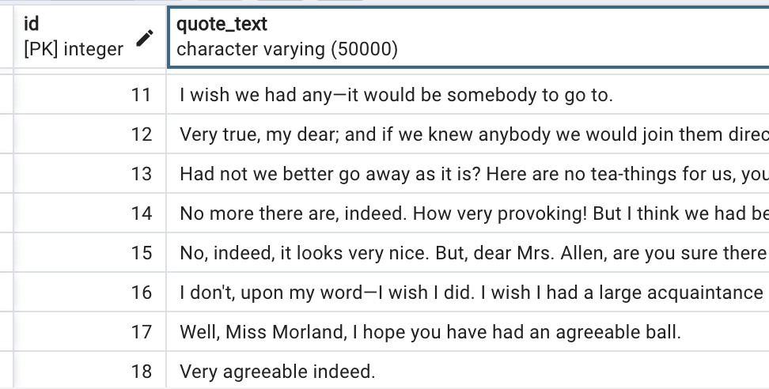

In 2020 I began assembling a database of direct discourse in novels. I've gained many skills by doing this, but primarily project organization and coordination. This was my "baby" project, which was overseen from start to present by me.
The database can be found in a .dump file here. At the moment, it exclusively focuses on one author: Jane Austen. In the future, I hope to expand the database to include conversational acts by various other authors: Charles Chesnutt is next up to bat.
Based on this database, in 2022 I launched the Direct Discourse Lab, a collaboration with several undergraduate students at UVA. I was able to connect with the undergraduate students through a research assistant program coordinated by the Jefferson Scholars Foundation. Each week, I meet with my undergraduate RAs and assign a hopefully one-week-long task; we check in and coordinate technologically when possible.
The project's large-scale goal is developing scholarly research out of the database's contents, which divides direct-discourse quotes into conversations and marks them on several aspects (e.g. verb marker, adverb marker, speaker). With the dataset loaded onto one's machine, somebody could perform SQL queries to find, for example, all of the quotes said by a particular character, or all of the quotes said by men in a novel, or all of the quotes by women marked "exclaimed" by the author. Currently we are working on a paper about conversations in Jane Austen's novels.
